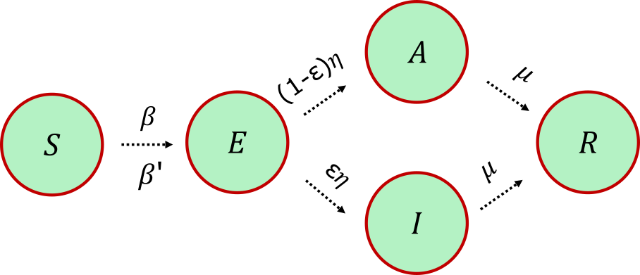
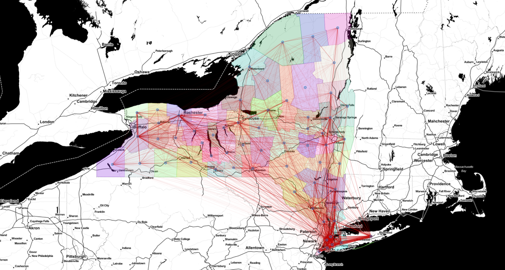
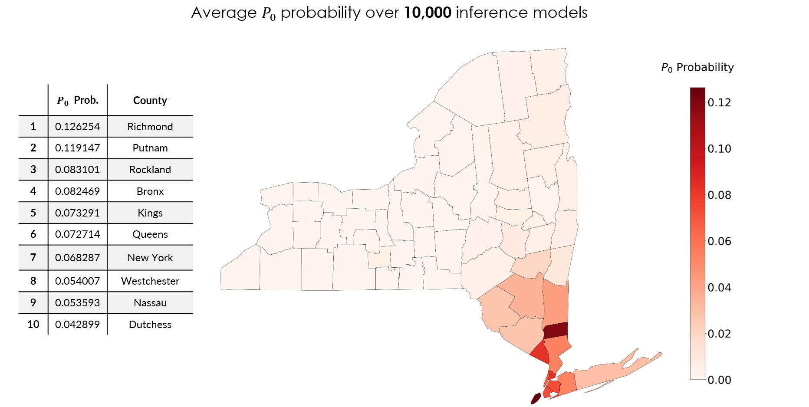
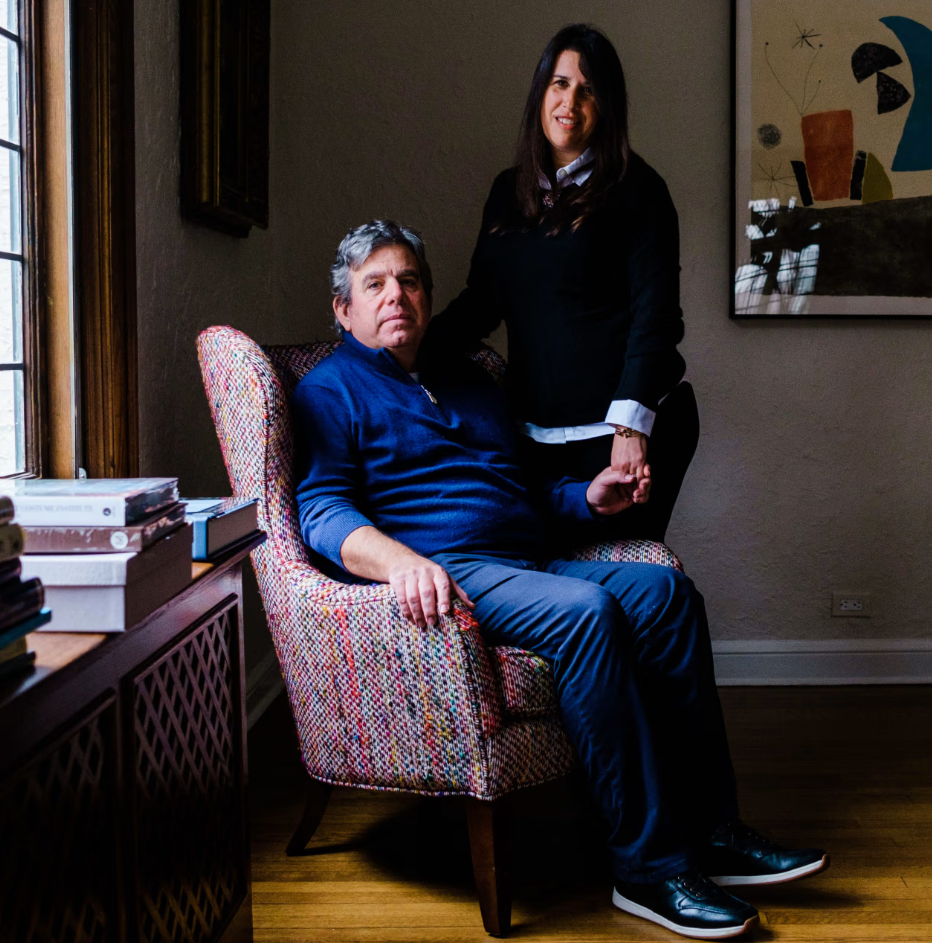
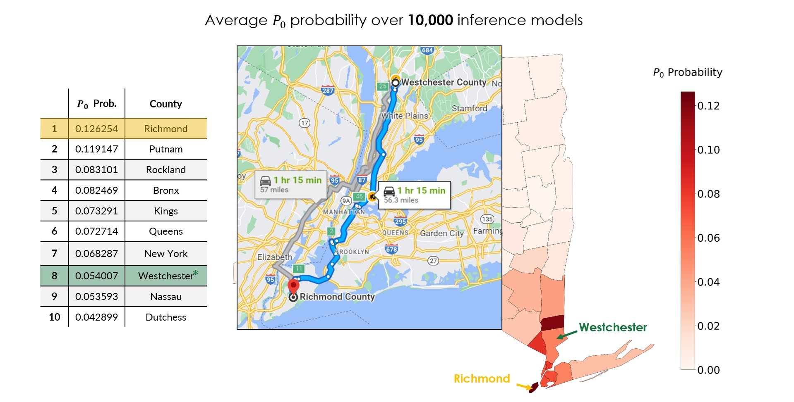
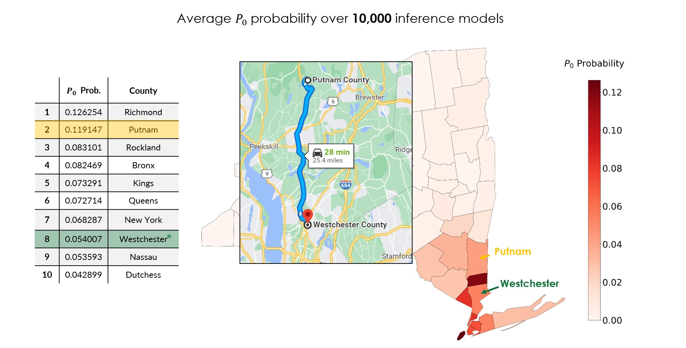

Shoutout to Andrew D. White, Gourab Ghoshal, and David Soriano-Paños.
The question
Most epidemic modeling asks a forward question: given where and how a disease started, where will it go? Here we ask the much harder inverse question, given where the disease is now, where did it begin? Inferring the spatial origin (the "epidemic seed" or patient-zero, \(P_0\)) is notoriously fragile: compartmental models are sensitive to their parameters, and the data we get early in an outbreak (case counts, mortality rates) are noisy, sparse, and biased by uneven testing [1]. We wanted a method that is honest about that uncertainty rather than overconfident.
The data
Our observations are the weekly-averaged number of confirmed COVID-19 cases from 20 New York counties, taken from the Center for Systems Science and Engineering (CSSE) at Johns Hopkins University, restricted to the window between January 19th and March 22nd, 2020, i.e. before the "New York State on PAUSE" executive order changed mobility behavior. Inside the model these map onto weekly averages of the population fraction in the infectious (\(I\)) and resolved (\(R\)) compartments, the two quantities for which real-world surveillance data is the least unreliable [1]. And because testing was patchy, we don't trust those numbers exactly: each observation is treated as carrying multiplicative noise with mean 1 and standard deviation 0.05. Cutting off at the lockdown matters too, since the simulator's mobility assumptions only hold while people are moving as usual.
The simulator: a metapopulation SEAIR model
The forward model (implemented in py0) is a metapopulation SEAIR compartmental model [6, 7]. Each of New York's 62 counties is a node ("patch") holding a locally well-mixed population, and within a patch people move between five compartments: Susceptible (\(S\)), Exposed (\(E\)), Asymptomatic (\(A\)), Infectious (\(I\)), and Resolved (\(R\)). A susceptible person gets exposed through contact with infectious and asymptomatic neighbors, with per-contact infection probabilities \(\beta\) and \(\beta'\); an exposed person then turns symptomatic-infectious with probability \(\eta\) or asymptomatic otherwise, split by the symptomatic fraction \(\varepsilon\); and both infectious classes resolve (recover or die) with probability \(\mu\) (Fig 1).

The susceptible update per patch \(i\) is
\[\rho^{S}_i(t+1) = \big[1 - \Pi_i(t)\big]\,\rho^{S}_i(t), \qquad \Pi_i(t) = \sum_{j=1}^{N_P} R_{ij}\, P_j(t),\]where \(\rho^{S}_i\) is the susceptible fraction in county \(i\), \(\Pi_i(t)\) is the probability that one of its residents catches the disease, and \(P_j(t)\) is the probability of infection inside county \(j\). The whole thing is coupled by a mobility matrix \(R_{ij} = T_{ij} / \sum_j T_{ij}\), built by row-normalizing the origin-destination commuting matrix \(T_{ij}\) from the United States LODES database [11]. That \(R\) is exactly the network shown in Fig 2: it is what lets the infection hop from county to county.

Here is the twist that makes the whole thing work: rather than trying to pin down the parameters \(\vec{\theta} = (\beta, \beta', \varepsilon, \eta, \mu, \dots)\) directly, we infer the disease trajectory itself [1]. The one latent variable we really care about is hidden in the initial condition, the identity of the seed county that holds the single exposed individual at \(t = 0\). Inferring trajectories instead of parameters is what lets us reason about that seed at all.
Simulation-based inference, and why likelihoods are the problem
We would love to do straightforward Bayesian inference: write down \(P(\text{data}\,|\,\vec{\theta})\), multiply by a prior, and read off the posterior over \(\vec{\theta}\). The trouble is that simulators like this one are typically not differentiable and their likelihoods are intractable: there is no closed-form probability of observing a given case-count trajectory out of a stochastic, networked ODE system. This is exactly the regime that simulation-based inference (SBI) (a.k.a. likelihood-free inference) targets [2].
But our problem has an unusual flavor. Classic SBI infers a few parameters from rich data. We have the opposite: a simulator we already trust (many "approximately correct" parameters) and only a sparse handful of noisy observations to nudge it with. Forcing a hard likelihood fit here would let a few data points dominate a model we believe is mostly right. We want the gentlest possible correction, and that is precisely what maximum entropy gives us [3, 4].
Maximum Entropy reweighting: biasing a simulator as little as possible
The idea is to treat the simulator as a prior distribution \(P(\vec{\theta})\) over parameters (including the seed location), draw many trajectories from it, and then find a posterior \(P'(\vec{\theta})\) that does two things: first, it reproduces the data, and second, it stays as close to the prior as possible. "As close as possible" is made precise by the Kullback–Leibler divergence: among all distributions that satisfy our data constraints, MaxEnt picks the one with the largest relative entropy with respect to the prior, which is the minimal distortion of the model we trust [3, 5].
Concretely, suppose we have \(N\) observations \(\bar{g}_k\) (the weekly-averaged case counts), where \(g_k[f(\vec{\theta})]\) is the corresponding quantity computed from a simulator run \(f(\vec{\theta})\). We let each observation carry its own uncertainty \(\epsilon_k\), and the defining MaxEnt move is to match the data in expectation rather than exactly:
\[\int d\vec{\theta}\, d\epsilon \; P'(\vec{\theta})\, P_0(\epsilon_k)\,\big\{ g_k[f(\vec{\theta})] + \epsilon_k \big\} = \mathbb{E}\big[g_k + \epsilon_k\big] = \bar{g}_k \quad \forall k\]where \(P_0(\epsilon_k)\) is a prior over how much disagreement we will tolerate (more on that below). This "match on average" ansatz is far weaker than a pointwise likelihood fit, which is exactly what we want when we strongly believe the prior simulator. Maximizing the entropy of \(P'\) relative to \(P\) subject to these \(N\) constraints yields a posterior in the exponential family [3, 5]:
\[P'(\vec{\theta}, \epsilon) = \frac{1}{Z'}\, P(\vec{\theta}) \prod_{k=1}^{N} e^{-\lambda_k\, g_k[f(\vec{\theta})]}\, e^{-\lambda_k \epsilon_k}\, P_0(\epsilon_k)\]where \(Z'\) normalizes and the \(\lambda_k\) are Lagrange multipliers, iteratively updated to satisfy \(\mathbb{E}[g_k + \epsilon_k] = \bar{g}_k\). Two properties make this attractive: finding this posterior is equivalent to maximum-likelihood estimation within the exponential family, and the fit is insensitive to prior strength, so there is no knob balancing "trust the data" against "trust the prior" that you have to tune by hand, unlike in Bayesian model averaging [3].
Why reweighting, and not re-simulating
The exponential form above turns inference into importance reweighting. We sample \(\vec{\theta}_i \sim P(\vec{\theta})\), run the simulator once per sample to get \(f(\vec{\theta}_i)\), and assign each trajectory a weight
\[w_i \;\propto\; \prod_{k=1}^{N} e^{-\lambda_k\, g_k[f(\vec{\theta}_i)]}.\]Any quantity of interest, including the probability that a given county is the seed, is then just a weighted average, \(\langle g \rangle = \sum_i g[f(\vec{\theta}_i)]\, w_i / \sum_i w_i\). Because the method acts purely on samples, its run time is independent of the dimensionality of the prior: we never differentiate the simulator and never compute a likelihood. The \(\lambda_k\) are fit by gradient descent with Adam [10] on the constraint residuals. When the prior support is too narrow to reach the data, a variational step gently shifts the sampling distribution, but in the well-sampled case it is pure reweighting.
The Laplace prior: budgeting for epistemic uncertainty
That \(\epsilon_k\) in the constraint is the slack that lets the posterior disagree with observation \(k\) on average, and \(P_0(\epsilon_k)\) is the prior we put on it. In this work \(P_0\) is a Laplace distribution,
\[P_0(\epsilon) = \frac{1}{\sqrt{2}\,\sigma_0}\, \exp\!\Big(-\frac{\sqrt{2}\,|\epsilon|}{\sigma_0}\Big),\]parametrized by a standard deviation \(\sigma_0\) that controls how much disagreement we allow (we use \(\sigma_0 = 1\) in the benchmark runs). This is the knob the slide calls an "uncertainty threshold." Send \(\sigma_0 \to 0\) and \(P_0\) collapses to a Dirac delta \(\delta(\epsilon = 0)\), recovering hard, exact-in-expectation constraints, just like a noise-free fit; turn it up and the model is allowed to shrug off observations it cannot reconcile with the trusted simulator.
Why Laplace rather than Gaussian? (I actually got asked exactly this during my PhD defense.) The choice encodes our epistemic uncertainty: systematic bias in the data, like uneven testing, under-reporting, and reporting lags, rather than the intrinsic variance of the disease process [1]. Because its log-density goes like \(|\epsilon|\), the Laplace prior acts like an \(L_1\) penalty on the disagreement. It strongly prefers fitting each observation exactly, but its heavier-than-Gaussian tails let the rare genuinely-inconsistent county deviate instead of dragging the whole fit toward it. So a small \(\sigma_0\) buys robustness to noisy outliers without letting any single county's count hijack the inference.
Running it 10,000 times
To turn the reweighted ensemble into a map, we read off \(P_0\) for a county as the total posterior weight of all the sampled trajectories whose single exposed individual at \(t = 0\) happened to sit in that county [1]. That only works because, when we build the ensemble, the infection is randomly seeded: each trajectory draws its seed county (and the individual within it) uniformly at random, so every county gets its turn as the hypothetical patient-zero. The county with the largest summed weight is our most probable origin.
So there are really two layers of randomness here. Within a single run, the seed is randomized across the ensemble of trajectories. And across runs, a single observation set could be lucky or unlucky, so to get a calibrated posterior over \(P_0\) we ran the inference 10,000 times, each time also randomizing which subset of the 20 observed counties we conditioned on. Each run produces a probability for every county being the seed; we then average over all 10,000 runs.
Results: the most probable origin
Averaging the posterior over all 10,000 inference models gives a ranked list of the most probable seed counties (Fig 3), and the top of it is dominated by the downstate New York City metro region, which is reassuring, since that is where the epidemic exploded. Richmond (\(P_0 \approx 0.126\)) and Putnam (\(0.119\)) lead, followed by Rockland (\(0.083\)), Bronx (\(0.082\)), Kings (\(0.073\)), Queens (\(0.073\)), New York (\(0.068\)), Westchester (\(0.054\)), Nassau (\(0.054\)), and Dutchess (\(0.043\)).

How does it compare to the news?
According to news reports, the first officially confirmed COVID-19 patient in New York was a 52-year-old lawyer from Westchester County (New Rochelle), Lawrence Garbuz (Fig 4) [12]. Westchester appears at rank 8 in our averaged posterior. That is not a miss; it is the point. The first detected case is not necessarily the true seed: detection depends on who happened to get tested, and silent asymptomatic spread (the \(A\) compartment) means the real origin can sit elsewhere in the mobility network.

Our single most probable prediction is Richmond County (Staten Island), about 57 miles (roughly a 75-minute drive) from Westchester (Fig 5). Given that the two counties sit at opposite ends of the same tightly coupled NYC mobility network, and that our method recovers the right region from nothing but sparse pre-lockdown case counts, that is a remarkably tight inference.

The second-ranked prediction, Putnam County, is even closer, about 26 miles from Westchester (Fig 6).

Takeaways
The appeal of MaxEnt here is that it is agnostic to the model structure and parameters: it will bias any black-box simulator toward sparse observations while distorting it as little as the KL divergence allows [3]. In the paper this shows up concretely. Even when we deliberately handicap the inference, running it with a simpler SIR scheme while the ground truth was generated by the richer SEAIR model, the source is still recovered with roughly 80–90% top-1 accuracy across realistic network densities. And the model turns out to be conservatively calibrated, i.e. more accurate than its own stated confidence (expected calibration error of 0.123) [1].
The most surprising result is about time. Conventional wisdom, formalized as an explicit time horizon \(t_{\text{hor}}\) for source detection, says the trail to patient-zero goes cold fast: once the epidemic saturates, the trajectories become degenerate and the origin is lost [8, 9]. We instead find a nonmonotonic accuracy. It drops after the early outbreak, then peaks again at advanced stages, right where the epidemic curves have their steepest gradients and therefore carry the most information. In other words, even late in an outbreak the reweighted posterior can reconstruct early dynamics, including the seed, with calibrated confidence [1].